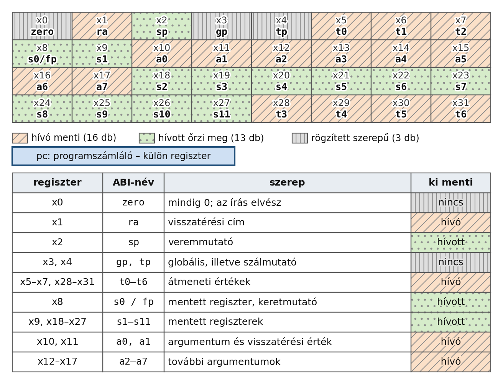
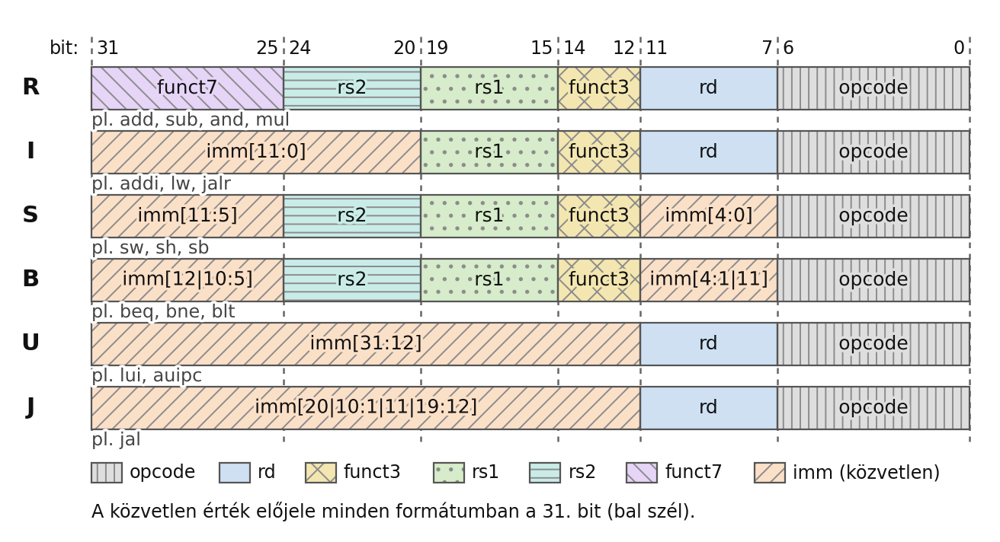

A tömbösszegző sum kernel ciklusa RISC-V gépi kódban öt
darab 32 bites szó, összesen 20 bájt. Ha 64 elemű tömbre futtatjuk, a
processzor a kis programmal együtt 333 utasítást hajt végre. Közben
semmit sem tud a C-forrásról vagy a szándékunkról. Csak számokat lát,
például a 0x00052303 szót, és ebből pontosan tudnia kell,
hogy ez azt jelenti: „olvass be négy bájtot az a0
regiszterben lévő memóriacímről a t1 regiszterbe”.
Ezt a jelentést az utasításkészlet-architektúra (instruction set architecture, ISA), a hardver és a szoftver szerződése rögzíti (Rétegek a tranzisztortól a programig). Most a RISC-V szerződésszövegét olvassuk el: milyen tárolóhelyeket lát a program, hogyan éri el a memóriát, és hogyan fér el egy utasítás minden adata 32 biten.
Az ISA olyan, mint egy konnektorszabvány: rögzíti a lábak helyét és a feszültséget, de nem mondja meg, milyen erőmű termeli az áramot. Az ISA rögzíti a program számára látható állapotot (regiszterek, programszámláló, memória), az utasítások bitmintáját és hatását, valamint a hibás helyzetek viselkedését. Nem rögzíti, hogy egy utasítás hány órajelciklusig tart, van-e gyorsítótár, vagy hány utasítás fut egyszerre. Ezek a mikroarchitektúra döntései, ezért tekintettük a Végrehajtási idő, CPI és a vasegyenlet alfejezetben a -t a megvalósítás tulajdonságának.
A látható állapot legfontosabb része a regiszterfájl
(register file): néhány tucat nagyon gyors, számmal elérhető tárolóhely
a processzoron belül (Tárolóelemek: latch,
flip-flop, regiszter, SRAM). Az ábra a RISC-V 32 egész regiszterét
mutatja. Mindegyiknek két neve van (például x10 =
a0), a minta pedig azt jelzi, függvényhíváskor kinek a
dolga megőrizni az értéket.

A RISC-V nyílt specifikációjú ISA, amelyet a Berkeley egyetemen
indítottak, és ma nemzetközi szervezet gondoz [S-RISCV-ISA]. Egy kis,
rögzített alapkészletből és szabadon választható
kiterjesztésekből áll. A kiterjesztéseket egy-egy betű
jelöli, és a gép neve ezek összefűzése: az RV32IM például
32 bites egész alap, szorzással és osztással.
| Jelölés | Tartalom |
|---|---|
RV32I |
32 bites egész alap: aritmetika, logika, betöltés, tárolás, vezérlésátadás |
RV64I |
az alap 64 bites regiszterekkel és címekkel |
M |
egész szorzás és osztás (Aritmetika, logika, betöltés és tárolás) |
A |
atomi memóriaműveletek a szinkronizációhoz |
F, D |
egyszeres és dupla pontosságú lebegőpontos számítás |
C |
16 bites, tömörített alakok a leggyakoribb utasításokra |
V |
vektorutasítások |
Egy apró mikrovezérlő megelégedhet az I betűvel, egy
alkalmazásprocesszor jellemzően a G (nagyjából
IMAFD) és a C készletet valósítja meg. A
változatszámok kiterjesztésenként eltérnek (ellenőrizendő: RV32I 2.1 és
M 2.0 a ratifikált specifikációban). Maga az RV32I alap
40 utasítás. Oktatásra azért alkalmas, mert kevés és
szabályos az utasítása, a specifikációja nyilvános, és nem hordoz
évtizedes kompatibilitási terheket.
Definíció. A programozó számára látható állapot (architectural state) mindaz, aminek az értékét utasítások olvashatják vagy módosíthatják, és ami meghatározza a program további futását: a regiszterek, a programszámláló és a memória.
Az RV32I 32 egész regisztert ad, x0-tól
x31-ig; mindegyik
bites (az RV64I-ben 64). A regiszter kiválasztásához 5 bit
kell, mert
.
A programszámláló (program counter, pc) a
következőnek végrehajtandó utasítás bájtcíme. A pc nem a 32
regiszter egyike: nincs száma, és közvetlenül csak a vezérlésátadó
utasítások és az auipc használják.
Az x0 különleges: olvasva mindig 0, az írása
elvész. Ez a vezetékezett nulla sok külön utasítást
fölöslegessé tesz: a másolás például addi a0, a1, 0, az 5
betöltése addi a0, zero, 5.
A többi 31 regiszter a hardver szemében egyforma; a szerepeket (az
ábra táblázata) az ABI (application binary interface)
rögzíti, hogy a külön fordított programrészek együttműködhessenek
[S-RISCV-PSABI]. A hívó menti (caller-saved) jelző azt
jelenti: ha a hívónak a hívás után is kell az érték, neki kell
elmentenie. A hívott őrzi meg (callee-saved) azt: a
meghívott függvény visszatéréskor ugyanazt az értéket köteles hagyni
benne. A Hívási konvenció, verem és veremkeret
részletezi a szabályokat; addig kis függvényeinkben csak t-
és a-regisztereket használunk.
Definíció. Egy ISA load–store architektúrájú, ha memóriát csak külön betöltő (load) és tároló (store) utasítás ér el, minden aritmetikai és logikai utasítás pedig kizárólag regisztereken (és az utasításba kódolt állandón) dolgozik.
A RISC-V ilyen. A memória bájtonként címezett, egy 32 bites szó négy
egymás utáni bájt, a bájtsorrend little-endian: a legkisebb helyiértékű
bájt van a legkisebb címen (lásd Számábrázolás
gépközelből). A C-beli a[0] = a[0] + 5; utasítás ezért
három lépés, ahol a0 a tömb kezdőcíme:
lw t0, 0(a0) # betöltés: memória -> regiszter
addi t0, t0, 5 # számolás csak regisztereken
sw t0, 0(a0) # tárolás: regiszter -> memóriaAz x86-64 ugyanezt egyetlen utasítással is leírhatja
(add dword ptr [rdi], 5), de a processzoron belül ott is
betöltés, összeadás és tárolás lesz belőle. A load–store elv haszna,
hogy egy utasításnak legfeljebb egy memória-hozzáférése van, így a
futószalag szakaszai egyenletesek maradhatnak (A
futószalag elve: átbocsátás és késleltetés). Ára a nagyobb
utasításszám
().
Továbbvitt eredmény. Load–store elv: adatmemóriát
csak a betöltő (lw, lh, lb,
lhu, lbu) és a tároló (sw,
sh, sb) utasítások érnek el. Erre épít a RISC-V, AArch64 és x86-64 összevetése és Az adatút elemei és összeállítása, ahol emiatt
utasításonként egy ALU-művelet és egy adatelérés elég.
Az RV32I minden utasítása pontosan 32 bites szó. Ebben
kell elférnie annak, hogy mit, melyik regiszterekkel
és milyen állandóval kell tenni.
Definíció. Az utasításformátum a 32
bit felosztása bitmezőkre. A közvetlen érték
(immediate) az utasításszóba kódolt állandó. A mezőneveket a
specifikáció rögzíti: opcode (a művelet fő osztálya, 7
bit), funct3 és funct7 (az osztályon belüli
művelet, 3 és 7 bit), rd (célregiszter), rs1
és rs2 (forrásregiszterek, 5-5 bit), imm
(közvetlen érték).
| Formátum | Mire való | Közvetlen érték | Példa |
|---|---|---|---|
| R | két regiszter, eredmény regiszterbe | nincs | add a0, a1, a2 |
| I | regiszter és állandó; betöltés; jalr |
12 bit, előjeles | addi t0, t0, 5 |
| S | tárolás | 12 bit, előjeles | sw a0, 8(sp) |
| B | feltételes elágazás | 13 bit, páros, előjeles | bne a1, zero, -16 |
| U | felső 20 bit betöltése | a [31:12] bitek | lui t0, 0x12345 |
| J | ugrás | 21 bit, páros, előjeles | jal ra, 8 |
A formátumok abban különböznek, hogy hány regisztermezőt tartanak meg, és mire osztják a fennmaradó biteket.

Olvasd végig az ábrát oszloponként: a regisztermezők, ha a formátumban szerepelnek, mindig ugyanott állnak. Ezért a processzor még a dekódolás befejezése előtt elkezdheti olvasni a regiszterfájlt; ha utóbb kiderül, hogy valamelyik értékre nincs szükség, eldobja.
Mivel a regisztermezők helye rögzített, a közvetlen érték csak a megmaradt helyekre kerülhet, ezért az S formátumban két darabban áll. A B és J formátumban ráadásul a bitek sorrendje is kevert. Az ok: a hardverben a közvetlen értéket multiplexerek rakják össze, amelyek minden kimeneti bithez formátumonként más utasításbitet választanak. Ha egy bit minél több formátumban ugyanonnan jön, annál kisebb a multiplexer és a késleltetése. Az előjel például mindig az utasítás 31. bitje, így az előjelkiterjesztés a formátum ismerete nélkül elindulhat. A Kód szakaszban megszámoljuk, mennyit nyer ez egy „naiv” elrendezéshez képest.
A B és J formátumban a 0. bit nincs tárolva, mert az ugrási cél
mindig páros (a C kiterjesztés 16 bites utasításai miatt
nem feltétlenül osztható 4-gyel). Így a 12 tárolt bit 13 bites, a 20
tárolt bit 21 bites eltolást ír le.
A fix hossz miatt a következő utasítás címe egyszerűen
pc + 4, és több utasítás párhuzamosan dekódolható. Az ára,
hogy a gyakori, egyszerű utasítás is 4 bájtos, a közvetlen érték pedig
rövid. A C kiterjesztés 16 bites alakjai javítják a
kódsűrűséget.
Továbbvitt eredmény. Az RV32I hat
formátuma (R, I, S, B, U, J) és a regiszterkonvenció (32 regiszter,
x0 = 0, a-, t-,
s-regiszterek) a további gépek alapja: rs1 a
[19:15], rs2 a [24:20], rd a [11:7] biteken,
az előjel a 31. biten áll. Erre épít az Aritmetika,
logika, betöltés és tárolás, a Kódolás
bitszinten és egy RISC-V-értelmező, a Hívási
konvenció, verem és veremkeret és Az adatút
elemei és összeállítása.
Programot assembly nyelven írunk, amelyet az
assembler fordít szavakká; a könyv a GNU assembler
szintaxisát követi. A címke (label), például
loop:, egy cím neve. A ponttal kezdődő
direktívák az assemblernek szólnak: .text
után kód, .data után adat következik, a
.word 3, 1, 4 három szót helyez el. A # utáni
rész megjegyzés. A pszeudoutasítás kényelmi alak saját
bitminta nélkül: az assembler valódi utasításra (vagy kettőre)
cseréli.
| Pszeudoutasítás | Valódi alak | Jelentés |
|---|---|---|
nop |
addi zero, zero, 0 |
nem csinál semmit |
mv rd, rs |
addi rd, rs, 0 |
másolás |
li rd, érték |
addi, vagy lui és addi |
állandó betöltése |
j címke |
jal zero, címke |
feltétlen ugrás |
ret |
jalr zero, 0(ra) |
visszatérés a függvényből |
call f |
jal ra, f |
függvényhívás (közeli célra) |
A hardvernek ezekről nem kell tudnia: az x0 és néhány
általános utasítás mindet kifejezi.
Kódoljuk kézzel az add a0, a1, a2 utasítást. Ez R
formátumú. A táblázatból: opcode =
(0x33), funct3 = 000, funct7 = 0000000. A
regiszterszámok az ábráról: a0 = x10,
a1 = x11, a2 = x12.
Írjuk a mezőket a 31. bittől lefelé:
| funct7 [31:25] | rs2 [24:20] | rs1 [19:15] | funct3 [14:12] | rd [11:7] | opcode [6:0] |
|---|---|---|---|---|---|
| 0000000 | 01100 | 01011 | 000 | 01010 | 0110011 |
A 32 bitet összefűzve és négyesével csoportosítva
0000 0000 1100 0101 1000 0101 0011 0011, hexadecimálisan
0x00C58533.
Most egy S formátumút: sw a0, 8(sp) („tárold
a0-t az sp + 8 címre”). Nincs rd;
az rs2 az adat (10), az rs1 a báziscím
(sp = 2). A 8 =
[11:5] része 0000000, [4:0] része 01000; funct3 = 010
(szó), opcode = 0100011.
| imm[11:5] | rs2 | rs1 | funct3 | imm[4:0] | opcode |
|---|---|---|---|---|---|
| 0000000 | 01010 | 00010 | 010 | 01000 | 0100011 |
Összefűzve 0000 0000 1010 0001 0010 0100 0010 0011,
vagyis 0x00A12423. Az rd
helyét ([11:7]) a közvetlen érték alsó öt bitje foglalja el;
rs1 és rs2 maradt a helyén.
Végül visszafelé: a Motiváció 0x00052303 szava binárisan
0000 0000 0000 0101 0010 0011 0000 0011. Az utolsó hét bit
0000011, ez a betöltés opcode-ja, tehát I formátum: imm =
0, rs1 = 01010 = 10 (a0), funct3
= 010 (4 bájt), rd = 00110 = 6 (t1). Az
utasítás: lw t1, 0(a0).
Az archkit.riscv a könyv RISC-V assemblere és
értelmezője (belseje: Kódolás bitszinten és egy
RISC-V-értelmező). A sum_src teljes programot ad a
sum kernellel; lefuttatjuk 64 elemen.
import sys; sys.path.insert(0, "code")
from archkit import riscv, trace
m = riscv.run(riscv.sum_src(list(range(1, 65))))
lines = m.program.listing().split("\n")
print("\n".join(lines[10:17])) # a sum függvény eleje és a ciklus
print("végrehajtott utasítás:", len(m.trace), " kiírt eredmény:", m.output)
print("utasításkeverék:", trace.mix(m.trace))00000028 00000293 li t0, 0
0000002c 00052303 lw t1, 0(a0)
00000030 006282b3 add t0, t0, t1
00000034 00450513 addi a0, a0, 4
00000038 fff58593 addi a1, a1, -1
0000003c fe0598e3 bnez a1, loop
00000040 00028513 mv a0, t0
végrehajtott utasítás: 333 kiírt eredmény: 2080
utasításkeverék: {'alu': 201, 'load': 64, 'br': 64, 'call': 1, 'ret': 1, 'system': 2}A bal oszlop a cím (4-esével nő), a középső a gépi szó: a ciklus a
0x2c és 0x3c közötti öt szó. A 333
végrehajtott utasításból 64 betöltés és 64 elágazás, vagyis minden
elemre pontosan egy-egy jut.
A SPECS utasítástáblából az alapkészlet mérete és a kézi
példa is ellenőrizhető.
base = [op for op, (_, _, _, f7) in riscv.SPECS.items()
if f7 != 1 and not op.startswith("csr") and op != "mret"]
print("RV32I utasítások száma:", len(base))
for text in ["add a0, a1, a2", "sw a0, 8(sp)"]:
word = riscv.assemble(text).words[0]
parts = " ".join(f"{n}={v}" for n, hi, lo, v in riscv.fields(word))
print(f"{text:<16} 0x{word:08x} {parts}")RV32I utasítások száma: 40
add a0, a1, a2 0x00c58533 funct7=0 rs2=12 rs1=11 funct3=0 rd=10 opcode=51
sw a0, 8(sp) 0x00a12423 imm[11:5]=0 rs2=10 rs1=2 funct3=2 imm[4:0]=8 opcode=35(Az M kiterjesztés utasításait a funct7 = 1
alapján, a rendszerregiszter-utasításokat név szerint szűrtük ki.) Végül
mérjük meg, mekkora multiplexert igényel a közvetlen érték. Egy
indexű kimeneti bithez formátumonként más forrás tartozhat: egy
utasításbit, az előjel (a 31. bit) vagy a konstans 0. A különböző
források száma a multiplexer bemeneteinek száma.
def mux_inputs(layout):
counts = []
for k in range(32): # a 32 bites közvetlen érték minden bitje
sources = set()
for fmt, parts in layout.items():
src = next((f"inst{ilo + k - mlo}" for _, ilo, mhi, mlo in parts
if mlo <= k <= mhi), None)
top = max(p[2] for p in parts)
sources.add(src or ("inst31" if k > top else "0"))
counts.append(len(sources))
return counts
naive = dict(riscv.IMM_LAYOUT,
B=[(31, 25, 12, 6), (11, 7, 5, 1)], # sorban tárolt bitek
J=[(31, 12, 20, 1)])
for name, layout in [("RISC-V", riscv.IMM_LAYOUT), ("naiv", naive)]:
c = mux_inputs(layout)
print(f"{name:<7} bemenet összesen: {sum(c):3d} legnagyobb: {max(c)} "
f"bitek 4+ bemenettel: {sum(x >= 4 for x in c)}")RISC-V bemenet összesen: 70 legnagyobb: 4 bitek 4+ bemenettel: 1
naiv bemenet összesen: 98 legnagyobb: 5 bitek 4+ bemenettel: 11A sorban tárolt B és J eltolás 70 helyett 98 multiplexer-bemenetet igényelne. A furcsa bitsorrend az assemblert terheli (azt egyszer írjuk meg), a hardvert viszont minden utasításnál tehermentesíti.
a0 célregisztert
a1-re, majd t6-ra. Mely hexadecimális jegyek
változnak? Ellenőrizd, hogy az rd mező [11:7] helye alapján
előre meg tudtad-e mondani.sw a0, 2047(sp) és a
sw a0, -4(sp) sort. Nézd meg, hogyan oszlik szét az érték
az imm[11:5] és imm[4:0] mezők között. Mit ír
ki az assembler a sw a0, 2048(sp) sorra?li a0, 5 és a li a0, 5000
sort (riscv.assemble(...).listing()). Hány valódi utasítás
lesz belőlük? Miért?00c58533 szót,
és kattints a regisztermezők bitjeire.Az x0 mint átmeneti tár.
Tünet: a add zero, a0, a1 után a „kiszámolt” érték
0. Ok: az x0 írása elvész, olvasása mindig 0.
Javítás: valódi célregisztert (t0) használj; az
x0 célregiszter csak akkor szándékos, ha az eredményre
nincs szükség.
A tárolás operandussorrendje. Tünet:
sw a0, 0(a1) helyett a memóriából várunk adatot
a0-ba. Ok: a sw első operandusa a
forrás (rs2), nem a cél; a nyíl iránya fordított,
mint az lw-nél. Javítás: olvasd így:
„a0-t tárold az a1 + 0 címre”.
Túl nagy közvetlen érték. Tünet: az
addi t0, t0, 5000 sorra az assembler azt jelzi, hogy a
közvetlen érték nem ábrázolható. Ok: az I formátum 12 bites
előjeles mezője csak
és
közötti értéket tárol. Javítás: li t1, 5000, majd
add t0, t0, t1.
x0 két különleges tulajdonsága, és melyik
pszeudoutasítások használják ki?rs1 és rs2 mező
minden formátumban, ahol szerepel?x7, x12,
x20 és x28 ABI-nevét, és hogy melyik fél menti
őket!sub,
lb, sh, bge, auipc
és jal? Melyiknek nincs rd mezője?sub s0, s1, t0
utasítást 32 bites szóvá! (A sub mezői: opcode
0x33, funct3 000, funct7 0100000.)RV32I kódot a C-beli
c[0] = a[0] + b[0]; utasításra, ha a három tömb kezdőcíme
a0, a1, a2! Hány utasítás és hány
memória-hozzáférés kell? Miért nem lehet egyetlen utasítással?riscv.decode(w).fmt), és számláld meg a formátumok
gyakoriságát a sum és a matmul_src(4)
programban! Melyik formátum a leggyakoribb, és miért?Az ISA a hardver és a szoftver szerződése: rögzíti a látható
állapotot, az utasításokat és bitmintájukat, a végrehajtás sebességét
viszont nem. A RISC-V moduláris: a 40 utasításos RV32I
alaphoz betűjeles kiterjesztések (M, A,
F, D, C, V)
kapcsolódnak. Az RV32I 32 darab 32 bites regisztere
(x0–x31) közül az x0 mindig 0; a
pc külön regiszter. Az ABI-nevek (a,
t, s, ra, sp) a hívó
és a hívott mentési felelősségét is rögzítik. A load–store elv szerint
memóriát csak betöltő és tároló utasítás ér el. A hat formátum (R, I, S,
B, U, J) rögzített 32 bites; a regisztermezők helye állandó, az előjel
mindig a 31. bit, a közvetlen érték bitjei ezért szétszórtak, cserébe a
hardver egyszerűbb.
opcode,
funct3 és funct7 mezőé.nop,
a mv, a kis értékű li, a j és a
ret.1. x7 = t2 (hívó menti),
x12 = a2 (hívó menti), x20 =
s4 (a hívott őrzi meg), x28 = t3
(hívó menti). Figyelj arra, hogy a t- és
s-regiszterek számozása nem folytonos.
2. sub R, lb I,
sh S, bge B, auipc U,
jal J. Nincs rd az S és a B formátumban, mert
a tárolás és az elágazás nem ír regisztert.
3. s0 = x8,
s1 = x9, t0 = x5.
Mezők: funct7 0100000, rs2 00101,
rs1 01001, funct3 000, rd 01000,
opcode 0110011. Összefűzve
0100 0000 0101 0100 1000 0100 0011 0011 =
0x40548433.
print(hex(riscv.assemble("sub s0, s1, t0").words[0]))0x405484334. A load–store elv miatt négy utasítás kell, három memória-hozzáféréssel:
lw t0, 0(a0) # t0 = a[0]
lw t1, 0(a1) # t1 = b[0]
add t2, t0, t1
sw t2, 0(a2) # c[0] = t2Három memóriacím nem is férne egy utasításba, és a load–store elv egy hozzáférést enged utasításonként.
5. A 13 bites eltolás páros értékei és bájt közé esnek (kb. ±1024 utasítás). Tárolt 0. bittel a 12 bites mező csak és közöttit fedne le, fele tartományt.
6.
from collections import Counter
def formats(src):
prog = riscv.assemble(src)
return Counter(riscv.decode(w).fmt for w in prog.words)
for name, src in [("sum", riscv.sum_src([1, 2, 3, 4])), ("matmul", riscv.matmul_src(4))]:
c = formats(src)
print(f"{name:<7}", dict(c.most_common()), " összes:", sum(c.values()))sum {'I': 14, 'U': 1, 'J': 1, 'R': 1, 'B': 1} összes: 18
matmul {'I': 20, 'R': 11, 'U': 3, 'B': 3, 'J': 1, 'S': 1} összes: 39Mindkét programban az I formátum vezet (addi,
li, mv, betöltés, ret); a
matmul-ban a címszámítás sok R formátumú műveletet is hoz.
Ezek statikus gyakoriságok: azt mutatják, hány szó van
a programban, nem azt, hányszor fut le.